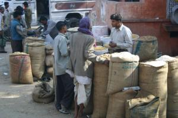
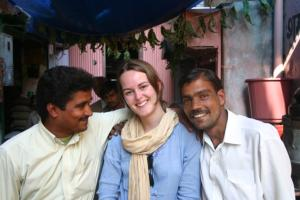

Le 3 décembre 2004,
Hier matin, nous avons décidé de visiter Jaipur en partant de l’hôtel à pied. Une fois égarés, comme d’habitude, et toujours entêtés à ne pas prendre de rickshaws qui pourtant nous sollicitaient systématiquement (ceci-dit, avec beaucoup moins d’insistance qu’à Delhi ou Agra), nous nous en sommes remis à un agent de la circulation pour qu’il nous indique le chemin. A notre plus grande surprise, il nous a fait traverser une grande avenue tout en nous accompagnant et en arrêtant les divers véhicules de la main pour nous diriger vers un rickshaw ... Nous avons finalement réussi à nous dépatouiller de l’affaire et à continuer notre ballade a pied. J’ai fini par croire qu’il est impossible pour un indien d’imaginer qu’un touriste étranger puisse utiliser ses jambes pour se déplacer.
 Et là, c’est la découverte des différents bazars de Jaipur : marché aux légumes, épiceries (au sens premier du terme), marchands de pneus et de cycles, drogueries, boutiques de vêtements, stands de thé, vendeurs de bonbons, ... L’ambiance est toute autre qu’à Delhi ou Agra : les gens ont l’air occupé, font leurs affaires entre eux et nous abordent beaucoup moins. Quelques "hellos" curieux de ci de la, rien de plus. La ville, par ailleurs, traditionnellement peinte en rose, est beaucoup plus aérée et belle que Delhi ou Agra.
A l’entrée d’une ruelle, nous rencontrons un autochtone qui nous offre un thé local (sucré avec du lait et du gingembre, très bon pour la gorge !) dans son stand. Il sort les tabourets et nous discutons pendant plus d’une heure. Il nous parle de l’équivalent de Jaipur en France : Toulouse, la ville rose. Nous sommes surpris, nous qui connaissions à peine la géographie indienne, il y a quelques mois ...
Deux curieux supplémentaires, dont un parle un français plus qu’approximatif, s’immiscent dans la conversation. Ils sont designers indépendants pour des tisseries (vêtements, nappes, couvertures ...) Nous sommes éberlués devant leur culture française : ils nous parlent de Gainsbourg, nous chantent du Brel ! Ils finissent par nous proposer de nous emmener au "Temple du Singe", un lieu hindou de tranquillité. Nous acceptons et nous voila embarqués dans une vieille Ford, au milieu des embouteillages de Jaipur. En faisant le plein, notre chauffeur se trompe de carburant et passe près de la catastrophe.
Pendant que les pompistes entament une purge de réservoir, Ajud nous emmène en rickshaw voir son gourou. En chemin, il nous apprend que lui-même suit un apprentissage quelque peu ésotérique et nous parle de sanscrit, shacras, aura, énergie intérieure ... Le rickshaw nous dépose devant une fabrique de bijoux. Nous montons à l’étage et Ajud nous explique en quoi consistera notre rencontre avec le gourou, pendant que des artisans travaillent le métal. Un peu perdu, je commence sérieusement à me demander dans quel guêpier nous nous sommes fourrés.
Nous patientons ...
Le moment de la rencontre arrive. Un homme d’une trentaine d’années consulte des tables astrologiques en sanscrit. Je suis un peu étonné, je m’attendais à un vieillard barbu ! Il demande à Eve-Laure quelques renseignements sur notre pays d’origine, sa date de naissance, ses occupations. Puis il décrit assez précisément son caractère, ses émotions, notre relation de couple. J’avoue que nous sommes assez bluffés. Il nous affirme que l’aura d’Eve-Laure est de couleur bleue et lui glisse une pierre bleue dans la main pour quelques minutes afin de rééquilibrer son énergie interne.
Nous sortons de la salle. Eve-Laure semble très émue. Nous rejoignons Ravi, notre second compagnon, qui a finalement réussi à purger le réservoir de sa voiture. Nous filons vers le Temple du Singe. Eve-Laure, encore toute retournée, ne dit pas grand chose. Nous arrivons au temple, retirons nos chaussures. On nous fait une marque orange a l’emplacement du troisième oeil, nous donne un morceau de sucre brut à croquer et une sorte de poudre à appliquer sur les cheveux ... Le temple est dédié a Hanuman, le dieu-roi des singes. D’ailleurs, ces derniers sont présents un peu partout. Nous discutons tranquillement à même le sol. Une famille indienne se présente à nous et nous convie à un repas de mariage à côté du temple. Mais Eve-Laure et moi préférons gravir une dune de sable à proximité, d’où on nous promet d’avoir une belle vue. La tache est rude mais Eve-Laure la prend comme un défi et accomplit dignement son chemin de croix. Nous échangeons alors nos impressions sur cette journée.
Nous redescendons et nos compagnons nous proposent un repas à l’indienne : on alterne des aliments très relevés et des aliments très sucrés. Puis on nous propose de rendre visite au propriétaire d’une fabrique artisanale de tissus. Il s’agit d’une coopérative où l’on voit des ouvriers appliquer manuellement, à la manière traditionnelle de Jaipur, des motifs de couleurs, issues de pigments exclusivement naturels, à l’aide de gros tampons sculptés dans le bois. On peut mettre jusqu’à sept couleurs différentes par pièce de tissu. Nous en profitons pour acheter chacun une chemise indienne.
Un peu épuisés par cette journée riche en émotions, nous décidons de nous retirer dans notre hôtel pour nous reposer. Apres une nuit plutôt calme de plus de dix heures, nous retrouvons deux jeunes chauffeurs de rickshaws (et oui, parfois ils conduisent un rickshaw a deux !!) à la sortie de l’hôtel. Nous leur avions donné rendez-vous ce matin, lors de notre arrivée à Jaipur, afin de visiter le village d’Amber, situé à proximité de la ville.
Quand nous leur annonçons que ce programme est annulé car nous souhaitons retrouver nos compagnons de la veille, ils crient au scandale et nous mettent en garde contre un business d’export de bijoux indiens en utilisant le numéro de passeport des touristes dont le visa leur permet d’acheter une certaine somme de biens sur lesquels les taxes gouvernementales ne sont pas appliquées. Un peu désabusés par ces pratiques de délation entre indiens, nous décidons de confronter nos chauffeurs avec les connaissances faites le jour précédent. Il s’avère que nos quatre bonhommes se connaissaient déjà et nous partons boire un chai (le fameux thé local au gingembre) à six. Ce sont les chauffeurs du rickshaw qui nous proposent alors un business de pierres précieuses.
Eve-Laure et moi, sous les conseils d’Ajud, prenons la poudre d’escampette et partons visiter la ville à pied, le temps que les chauffeurs nous oublient. Nous visitons le City Palace, palais des maharajas de Jaipur, mélange d’architecture moghole (ethnie des envahisseurs musulmans venus de l’ouest au Moyen-Age) et rajasthanie (ethnie locale). Nous continuons en nous arrêtant devant le Hawa Mahal (palais des vents). Il s’agit d’une façade de cinq étages munies de minuscules fenêtres qui permettaient aux femmes du harem royal d’épier les citadins dans la rue, sans être vues.
 Au bout de quelques heures, nous retrouvons Ajud et Ravi. Toujours devant un verre de chai, nous discutons de mariage, des différences entre l’Inde et la France en ce qui concerne les relations et rencontres entre hommes et femmes. Je leur demande s’ils peuvent choisir leur future épouse. C’est possible, me répond-on, parmi un choix restreint de jeunes-filles présentées par les parents, sachant que l’éventuel futur couple a le droit à un entretien d’une heure pour faire connaissance et se décider. Autant dire que nous sommes à des années lumières de nos coutumes !
Nous partons consulter le gourou une nouvelle fois, pour qu’il puisse examiner mon cas de plus près : il me pose les mêmes questions qu’à Eve-Laure et place ses paumes à quelques centimètres au-dessus des miennes. Il me dit que mes éléments sont le feu et l’eau et que par conséquent j’ai une sorte de conflit interne perpétuel entre le principe masculin et le principe féminin ; ce qui peut, par exemple, compliquer une prise de décision car je balance toujours entre intuition et intellect sans pouvoir trancher. Il ressent que mon shakra du cœur est bloqué, ce qui correspond exactement au problème récurrent que mon père détecte en médecine chinoise : un blocage du point des émotions. Le gourou me conseille la pratique de la méditation et l’utilisation d’une oeil de chat (pierre précieuse) purifiée. Il finit l’entretien par une proposition de vente d’un oeil de chat a 87 euros pour moi et d’une pierre bleue à 103 euros pour Eve-Laure, toutes les deux purifiées par ses soins, bien entendu. Je ressors un peu déçu par la démarche commerciale, bien que toutes les analyses faites sur Eve-Laure et moi s’avèrent exactes. J’aurais du m’en douter : un gourou est toujours vénal, surtout dans une fabrique de bijoux !
Nous quittons là nos amis, un peu fatigués par tous ces événements. Une bonne nuit de sommeil nous attend ...
Michaël
Super !!! A votre retour, y’aura plus qu’a imprimer le site pour faire un livre. Vos descritions sont excellentes. On se régale avec Camille et ca nous donne envies de voyager.
Grosses bises à vous 2.
Camille,Luc et Pat.
{kind=link}
{kind=link}